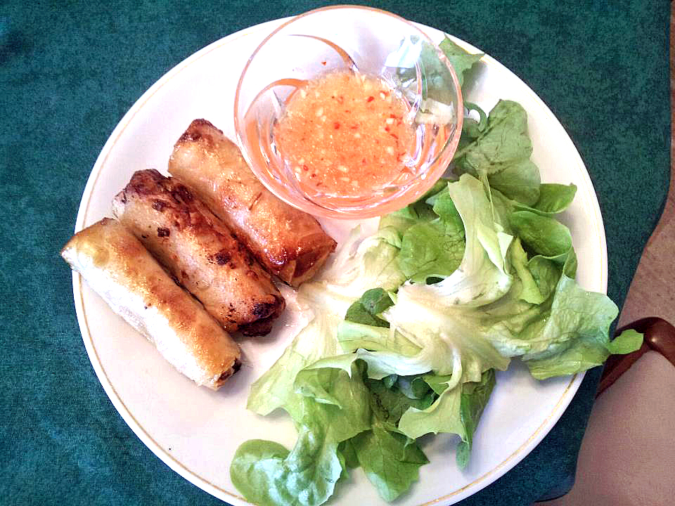

Ingredients:
- 1/2 kilo ground pork
- 3 carrots, peeled and grated
- 1 onion
- 2 tablespoons of Vietnamese fish sauce
- 2 teaspoons of sugar
- 2 teaspoons salt
- 3 teaspoons of black pepper
- 20-30 egg roll wrappers
- 1 egg
- Oil for frying
- 2 wood ear mushrooms
- 2 tablespoons of water
- Minced Garlic
- Lemon juice
- Dice the mushrooms, dice the onions, peel and grate the carrots. Mix the mushrooms, onions, carrots, pork, sugar, salt, and black pepper together.
- Once you have mixed everything together, marinate it for 15 minutes.
- During the marination, peel apart the egg roll wrappers. Now you are ready to roll your cha gio.
- Beat the egg
- Lay 1 egg roll wrapper diagonally on a flat surface. Put about 3 tablespoons of the mixed meat and spread it out between the center of the wrapper and the corner of the wrapper. Fold bottom corner over filling, then fold in side corners to enclose filling. Roll until you have no wrapper left and dab your finger into the egg. Put some of the egg on the corner of the wrapper for sealing. Roll all of the cha gio in this way.
- Heat up about 2 cups of oil in a medium sized pot until hot. Put the spring rolls in the oil and fry them until the skin is a nice yellow-brown and the egg roll is floating at the top of the oil.
- For the fish sauce (or nuoc mam), mix two tablespoons of fish sauce, two tablespoons of water, one tablespoon of sugar, three cloves of minced garlic, half a tablespoon of lemon juice.
|
 |